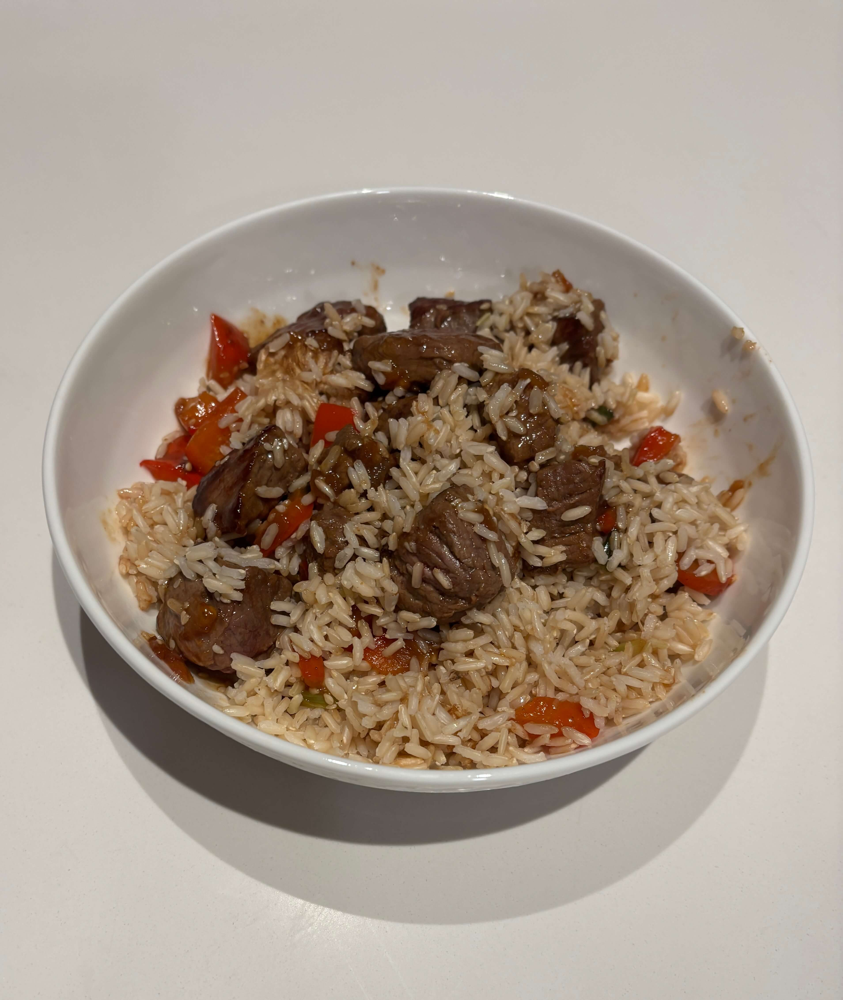

Home
Mongolian Beef

Makes 3-4 servings
Ingredients
- 1 package Kikkoman Mongolian Beef Seasoning Mix
- 1 lb either stew meat or cut up strip steak
- 3 tablespoon vegetable oil divided
- 1 small onion thinly sliced
- 1/2 red bell pepper thinly sliced
- 4 green onions cut into 2 inch lengths
- 1 teaspoon sesame seed
Steps
- Disolve seasoning mix in 1/3 cup water
- Stir-fry beef 2 minutes in 2 tablespoons hot oil in large skillet over medium-high heat. Remove from pan
- Heat 1 tablespoon oil in the same pan. Add onion and pepper, stir fry 2 minutes. Stir in green onion
- Add beef and seasoning mixture, cook and stir until the sauce boils and thickens. Sprinkle with sesame seed